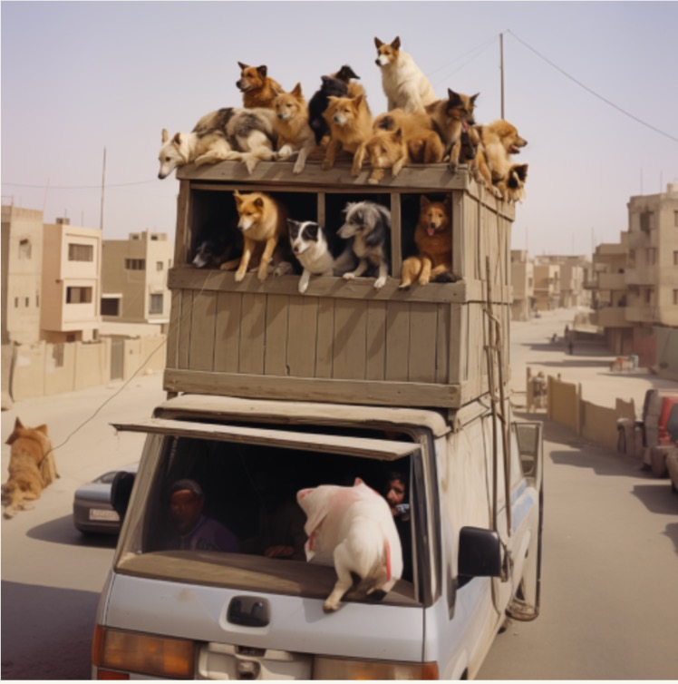
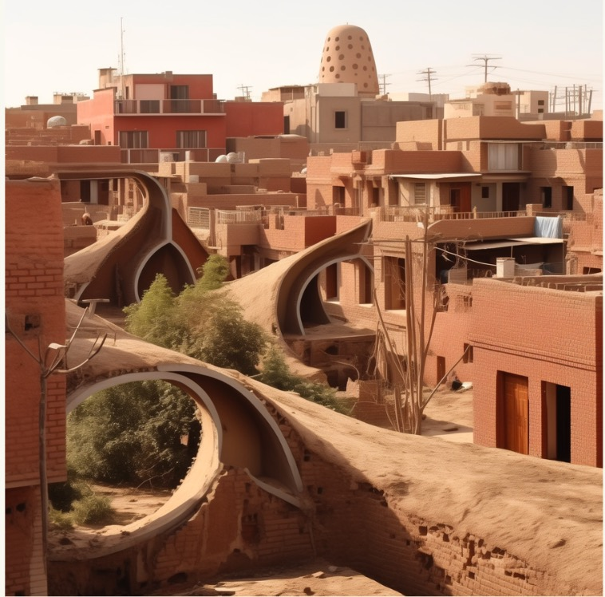
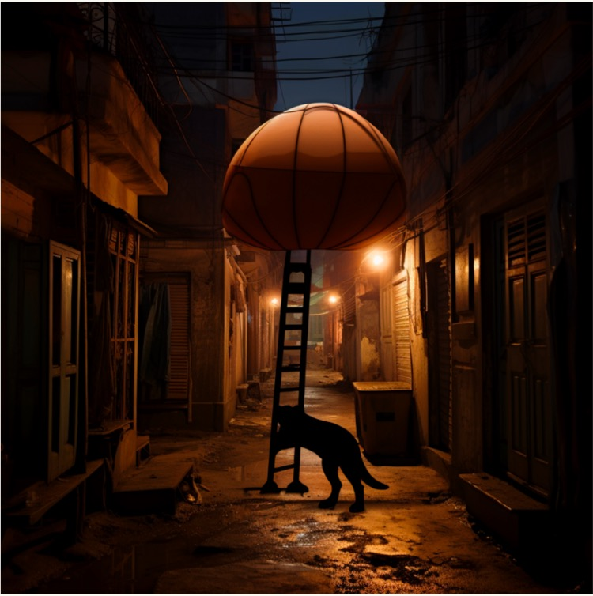

Avni Mohan
Stray dogs in Cairo often face the danger of sleeping on busy roads, where they are at high risk of being hit by vehicles, leading to injury or death. The congested traffic and fast-moving cars offer little chance for dogs to find safe resting places, making them vulnerable to accidents, especially at night. Additionally, the roads do not provide shelter from the harsh elements, such as the extreme heat during the day or the cold at night, putting their health at risk. There's also the threat of abuse from people who may view them as nuisances, further endangering their lives. Therefore, providing safe havens for these dogs to sleep is crucial to protect them from these myriad threats and to ensure their well-being.
Local handymen meticulously construct versatile wooden boxes that are utilized during the day to transport goats and other livestock to various destinations, and when these boxes are not engaged in the day's labors, they double as a sanctuary for stray dogs, offering them a secure and warm place to rest, ensuring that the boxes are never idle and always serve a purpose in the community.
The idea was to incorporate distinctive structures into these urban areas that seamlessly blend with the red brick architecture. These organic structures, serving as shelters for stray dogs, aim to lift the dogs from the city, where it is dangerous for them. Inside, discrete feeding stations enable people to provide nourishment without direct contact. The design, with its porous structure, allows for visual connection and controlled interaction, prioritizing safety for both humans and animals.
An inflatable bubble will be used to fill in the negative space between alleys at night in Cairo. The stray dogs will be able to sleep in these bubbles overnight. The bubbles will be floating so the streets are not blocked. The bubble will float Inspired by the concept of Diller Scofidio and Renfro’s Hirshhorn ‘Bubble’, which was a proposed project for the Smithsonian. The project was to create an inflatable bubble that can be used for special events.